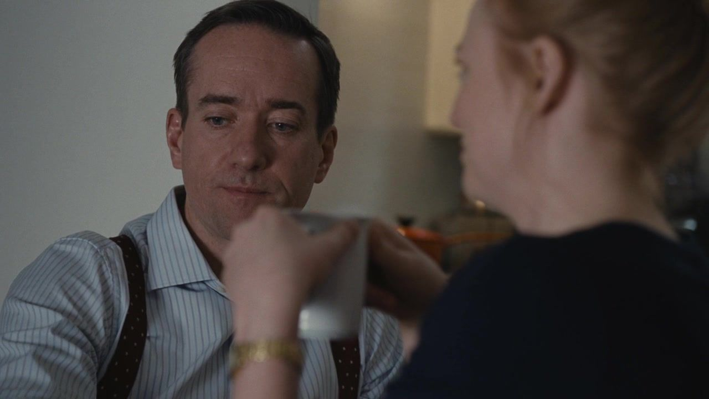
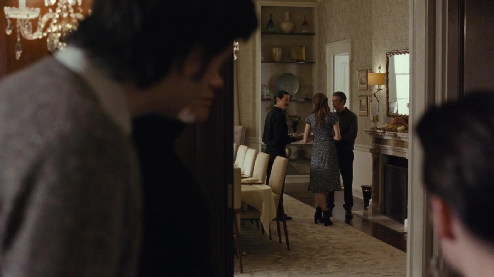
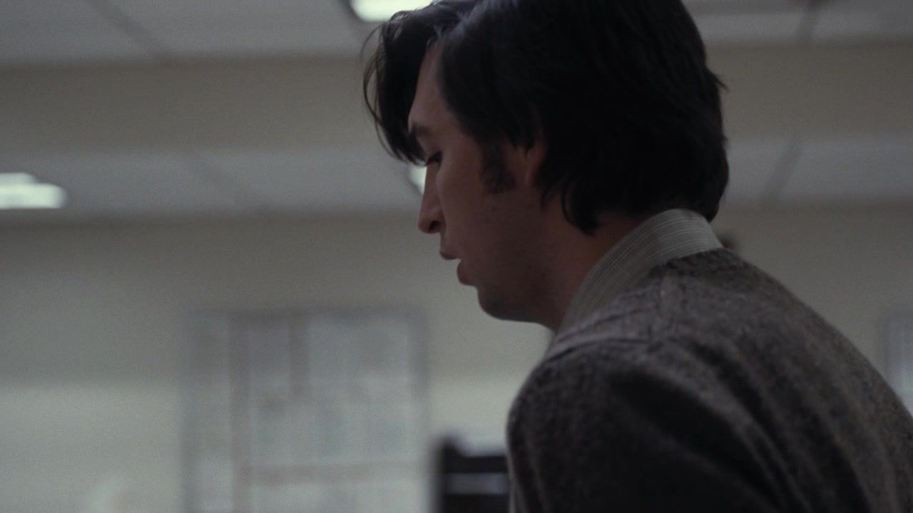
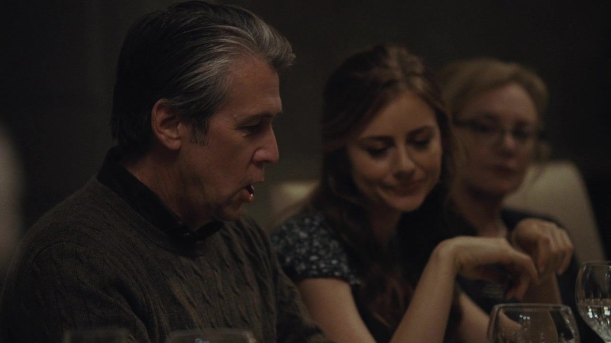
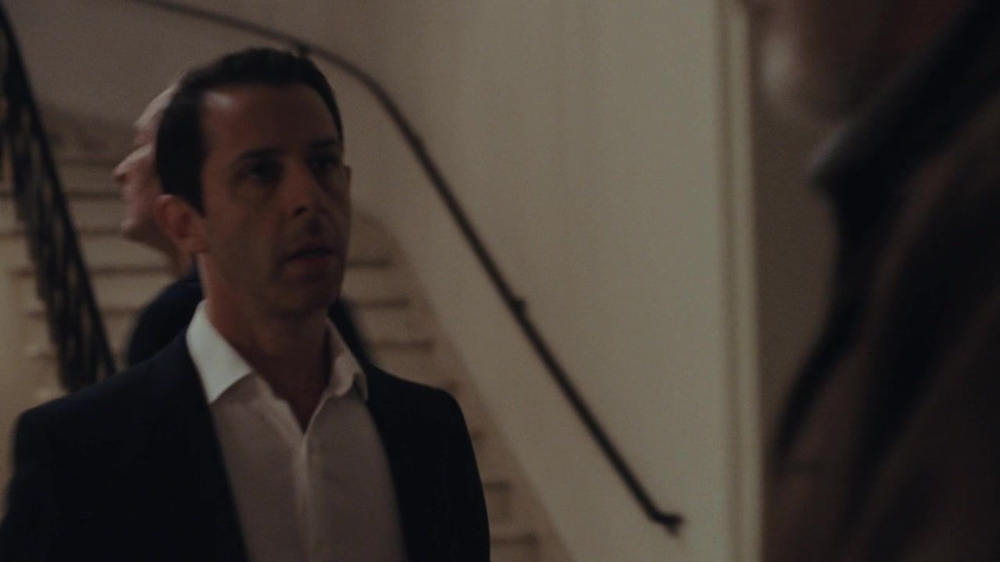
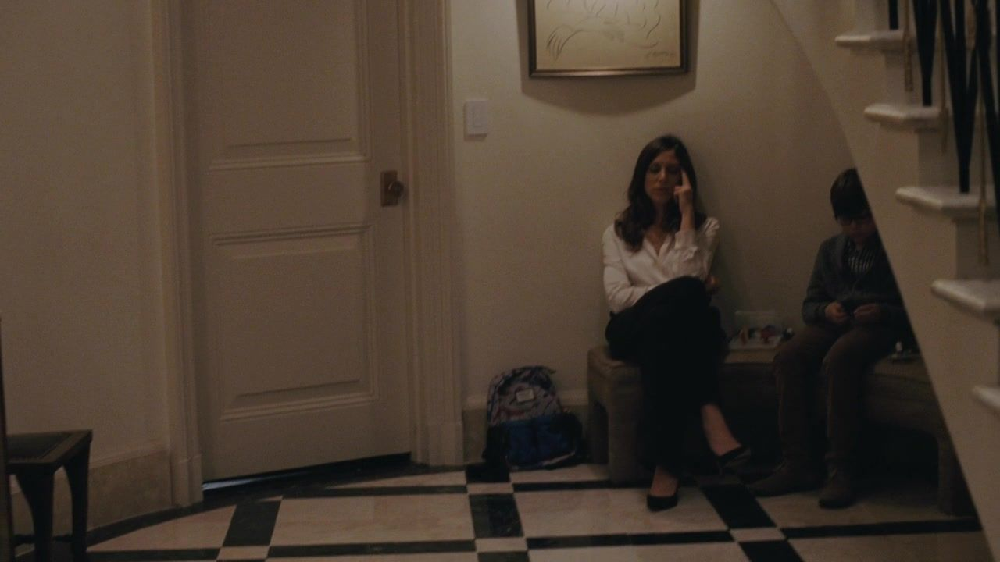
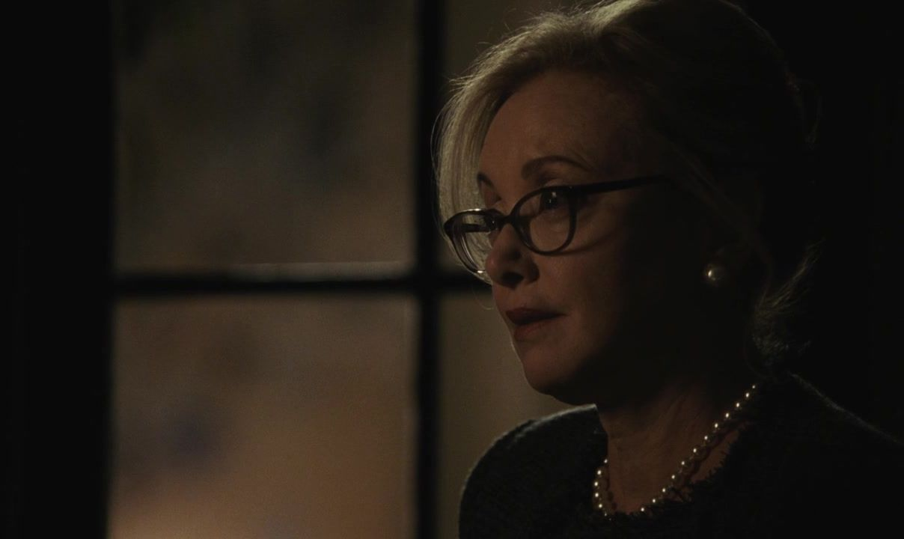

01 / THE STORY
从公司到餐桌，
九次无法圆回的裂缝。
按本集主线分为三幕；并行发生的谈话与善后，保留其交错关系。
NINE TURNSIACT I / SCENES 01—03
节日前的安排一边准备团圆，一边准备防备。
01公司 / 地方台收购
他想扩张，儿子想先判断他还清不清醒。
剧情事实洛根积极推进地方电视台收购，肯德尔与专业顾问对决策及其恢复状态感到不安，讨论不信任动议。 [1] [2]
这一场为什么重要 个人解读
反对父亲既可能出于公司利益，也可能满足儿子重新取得位置的愿望。不能因为两种动机重叠，就认为风险是编出来的。关键是让具体决策接受审查，而不是只问说话的人是否足够孝顺。
权力的变化经营争论开始寻找正式的治理出口。
汤姆与希芙 / 婚前协议
签字之前，他先听见关系里的分量差。

↗汤姆与希芙在家中讨论婚前安排。｜HBO · 本集截图剧情事实汤姆让作为律师的母亲查看婚前协议，并对其中的忠诚安排表示不安。希芙以不同方式淡化他的担忧。 [1] [2]
这一场为什么重要 个人解读
协议把平时可以绕开的不均衡写成文字。汤姆希望条款能确认共同期待，希芙却更习惯把自由视为无须同等解释的前提。他并非没有议价能力，但害怕失去关系，使开口的每一步都更费力。
权力的变化纸上条件把亲密关系中的权力差显形。
长途接人 / 格雷格与祖父
他想靠家族往上走，祖父先叫他离远一点。

↗感恩节聚会中的格雷格与长辈，同场人物配图。｜HBO · 本集截图剧情事实格雷格接祖父伊万来过感恩节。伊万对洛根、公司及家族价值观抱有强烈批评，也提醒格雷格保持警惕。 [1] [2]
这一场为什么重要 个人解读
祖父代表另一种长辈权威，却没有给格雷格一个同样具体的工作出口。格雷格可以理解批评，仍不愿放弃眼前机会。这里的代际差异不是谁更聪明，而是谁能承担退出的代价。
权力的变化两位长辈的价值与资源，向新人提出不同要求。
这一幕之后经营分歧、婚前协议与祖父的到来，都让平静的节日多出条件。
IIACT II / SCENES 04—06
文件与盟友有人要求消除痕迹，有人想留下退路。
04公司档案 / 一次被要求做完的差事
碎纸机需要他听话，他偏偏留下副本。

↗格雷格在公司处理文件的同场画面。｜HBO · 本集截图剧情事实汤姆让格雷格销毁与邮轮问题相关的文件。格雷格在处理过程中秘密保留了副本。 [1] [2]
这一场为什么重要 个人解读
他并没有公开揭露问题，也没有完全执行命令。副本首先是一种自保：当上司能把责任向下交付，材料就可能帮助他证明自己知道什么、奉谁的命令行事。犹疑与机会意识在这里变成了可被带走的东西。
权力的变化组织试图消除的痕迹，成为新人的保护资源。
家宴 / 洛根与伊万
一个把影响力当功绩，一个追问它造成了什么。

↗家宴中的伊万与家属；用于同场关系辨认。｜HBO · 本集截图剧情事实兄弟二人就公司、公共影响及家庭价值激烈争执，伊万一度离席。 [1] [2]
这一场为什么重要 个人解读
伊万的批评指向洛根如何使用媒体，而洛根更习惯把成功与规模当作辩护。两人拥有共同家史，却没有因此共享同一种成功标准。矛盾不只是旧怨，也涉及一家媒体公司对家门之外的人做了什么。
权力的变化家族成功被放到不同的道德尺度上。
离席之后 / 肯德尔试探
讨厌弟弟的人，仍可能拒绝替你推翻他。

↗家宴里肯德尔面对长辈的同场反应镜头。｜HBO · 本集截图剧情事实肯德尔向身为董事的伊万试探改变公司领导的可能，伊万不愿参与对弟弟的谋划。 [1] [2]
这一场为什么重要 个人解读
肯德尔希望把价值批评迅速换成一张可以使用的票。伊万却区分了厌恶某人的做法，与接受这种反抗方式。支持者不是意见相似的人数，而是愿意为一个具体行动付出代价的人数。
权力的变化他第一次更清楚地看到反感并不自动等于支持。
这一幕之后格雷格没有完全照办，伊万也不愿把批评弟弟直接变成协助推翻弟弟。
IIIACT III / SCENES 07—09
餐桌上的裂口伤害发生后，家常话不再足够。
07餐桌 / 被要求表达感谢
感谢的句式，没有消除各自的不满。
剧情事实家人轮流表达感谢，谈伴侣、家人和自己的处境，随后继续玩节日游戏。 [1] [2]
这一场为什么重要 个人解读
礼仪可以让人完成一段共同表演，也可以让尖刻绕着固定句式露出来。谁被欢迎、谁被当作笑料、谁要努力称赞，仍按原来的位置分配。形式上的团圆与实际的情感安全，始终隔着距离。
权力的变化家常仪式让紧张短暂有了共同外壳。
游戏之后 / 父亲与孙子
这一击，让“担心判断力”不再只是意见。

↗拉瓦与孩子在家中楼梯处的同场画面；非击打瞬间。｜HBO · 本集截图剧情事实洛根在与孙子伊弗森的互动中打到孩子，肯德尔和拉瓦强烈反应，聚会进一步破裂。 [1] [2]
这一场为什么重要 个人解读
孩子没有参与公司的争斗，却承担了父亲权力难以被限制的后果。肯德尔此刻面对的不只是自己的认可需求，也是作为父亲能否保护孩子的责任。原先可以被说成争职位的质疑，现在有了不能用职位解释掉的事实。
权力的变化公司的判断争议，变成家庭中的具体伤害。
散席后 / 两种继续
他继续复述游戏，儿子继续寻找选票。

↗散席前后，杰丽关注局面的反应镜头。｜HBO · 本集截图剧情事实洛根仍在复述记忆游戏的内容；杰丽对他的行为更加担忧，肯德尔推进不信任表决的决心增强。 [1] [2]
这一场为什么重要 个人解读
把游戏说完整，可以像是在证明自己仍然记得规则，却没有回答刚才如何对待孩子。家庭经常用恢复日常来替代面对伤害，而这一集让至少一些人不再愿意立刻回到日常。下一步反抗有了更迫切的理由，也仍需要真正的票。
权力的变化表面的继续，不能恢复已经改变的信任。
这一幕之后父亲打到孩子，让对判断力的抽象担忧成为具体经历；不信任表决开始得到更坚决的支持。